Einführung
Organisation
- Vorlesung
- Übung
- Sprechstunde
- Termine nach Vereinbarung
- Prüfung mündlich 40 Minuten
- Termine nach Vereinbarung
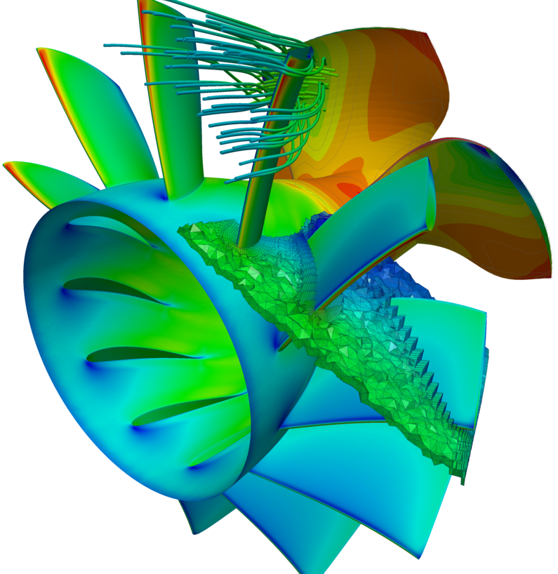
Zeitplan
| Thema | |
|---|---|
| Einführung | 1 |
| Grundgleichungen | 2 |
| Ortsdiskretisierung FDM | 3/4 |
| Turbulenz | 5/6 |
| Zeitdiskretisierung FDM | 7 |
| FVM | 8/9 |
| Turbomaschinen | 10 |
| Geometrie | 11 |
| Vernetzung | 12 |
| Optimierung | 13/14 |
| Thema | |
|---|---|
| Ortsdiskretisierung (H) | 1 |
| Zeitdiskretisierung (H) | 2 |
| Einführung (CFX) | 3 |
| Backward-Facing-Step (CFX) | 4 |
| Rechnerübungen | 5/6 |
| Simulation Turbine (CFX) | 7 |
| Rechnerübungen | 8/9 |
| Vernetzung (H) | 10 |
| Optimierung | 11/12 |
10 Vorlesungen in 14 x 90 Minuten und 9 Übungen in 12 x 90 Minuten
1 x Institutsbesichtigung und 2 x Offene Sprechstunde
Literatur
- Ferziger, J. H.; Peric, M.; “Numerische Strömungsmechanik”; Springer-Verlag, 2008
- Laurien, E.; Örtel, H.; “Numerische Strömungsmechanik”; Vieweg-Verlag, 2010
- Pope, S. B.; “Turbulent Flows”; Cambridge Univ. Pr., 2006
- Moukalled, F.; Mangani, L.; Darwish, M.; “The Finite Volume Method in Computational Fluid Dynamics”; Springer, 2016
- Weicker, K.; “Evolutionäre Algorithmen”; Springer Vieweg, 2015
Hydraulische Maschine
Auslegung
Rahmenbedingungen
- Bestehende Anlage
- Saugrohr fix (Änderung sehr teuer)
- Kontour von Nabe und Kranz fix
Ziel
- Möglichst hoher Wirkungsgrad unter Einhaltung der Auslegungsdaten
@junginger_2016
Hydraulische Maschine
Simulation und Eigenschaften
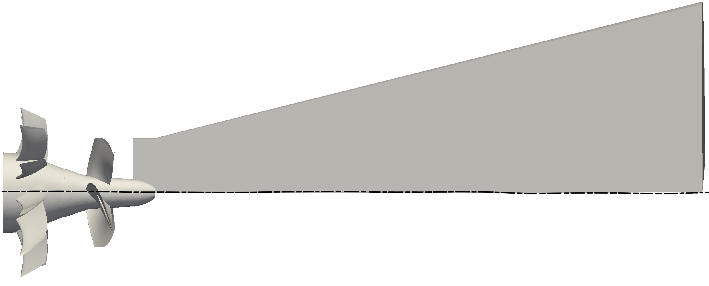
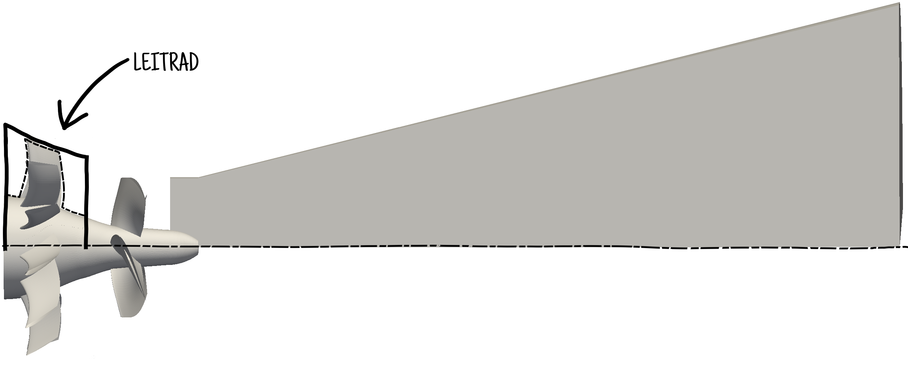
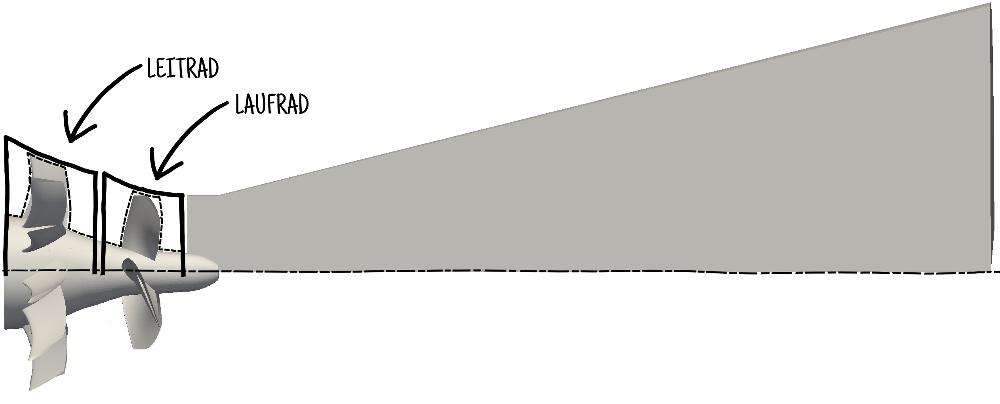
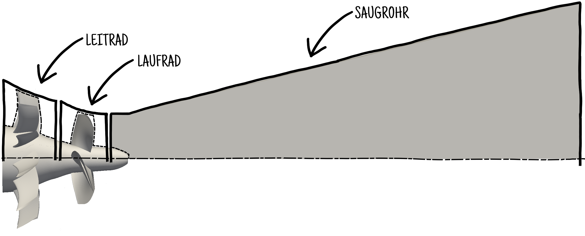
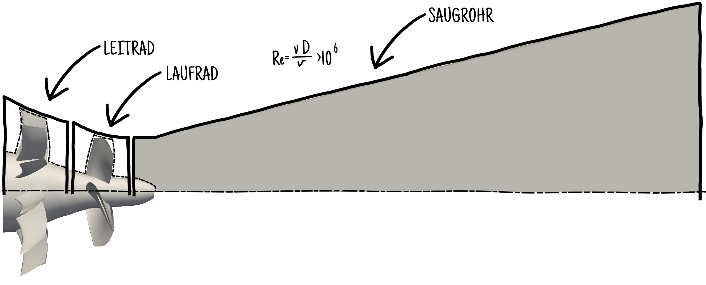
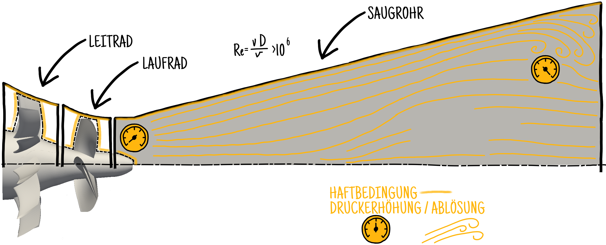
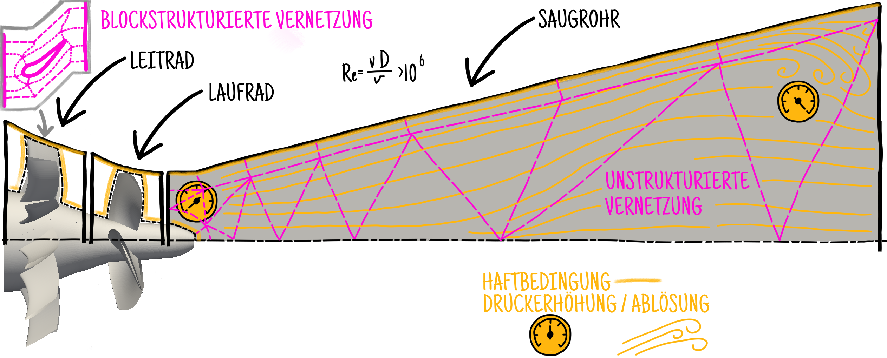
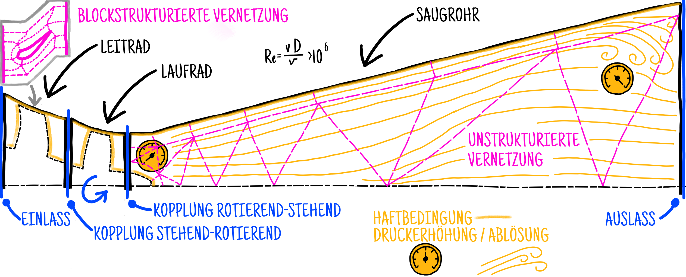
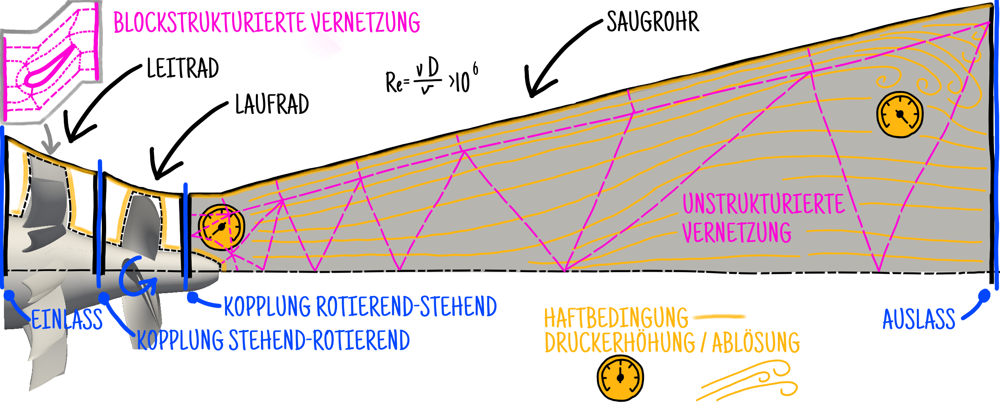
- Inkompressible Wasserströmung mit kinematischer Viskosität \(\nu = 10^{-6}\)
- Rohrturbine mit z.B. \(D = 4m\) Durchmesser und einer Zuströmgeschwindigkeit von \(v=1\frac{m}{s}\) und damit hohen \(Re\)-Zahlen bzw. turbulenter Strömung
- Steigender Druckgradient
- Vernetzung des Strömungsgebiets
- Stehende und rotierende Gebiete müssen berechnet und gekoppelt werden
Hydraulische Maschine
Geometrische Beschreibung
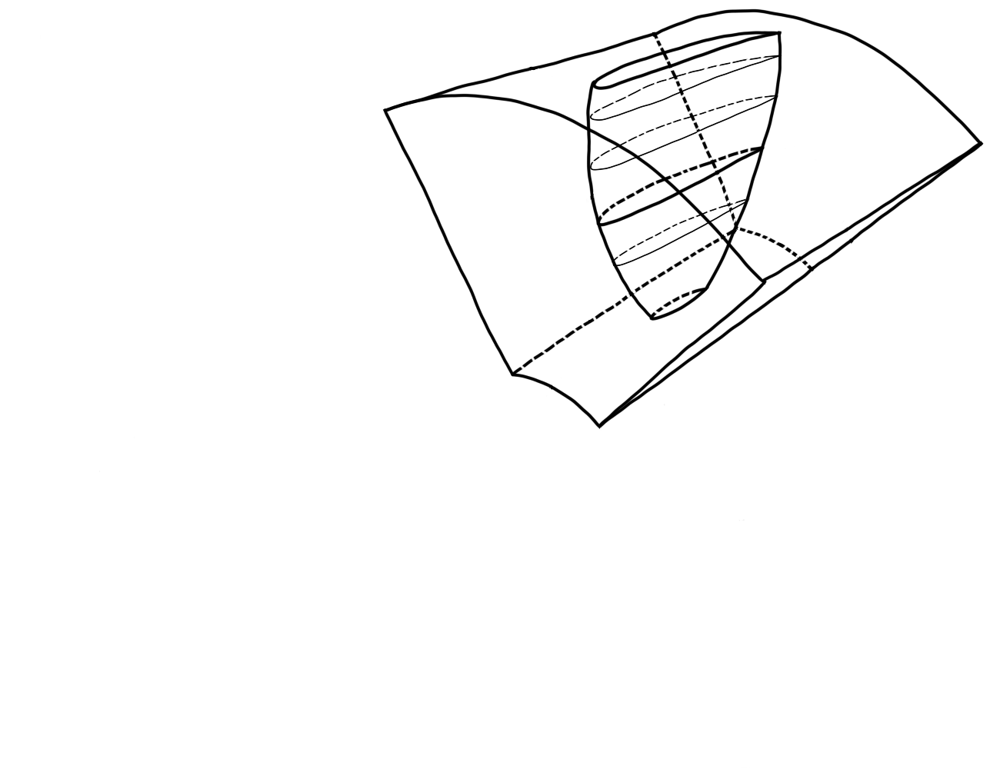
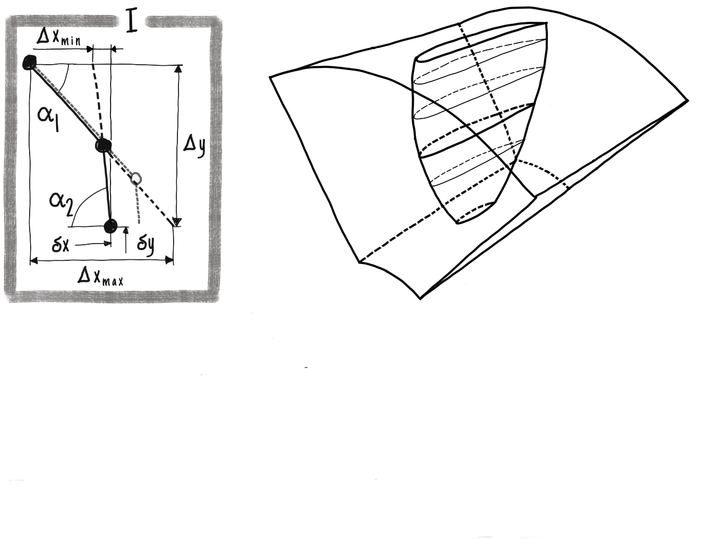
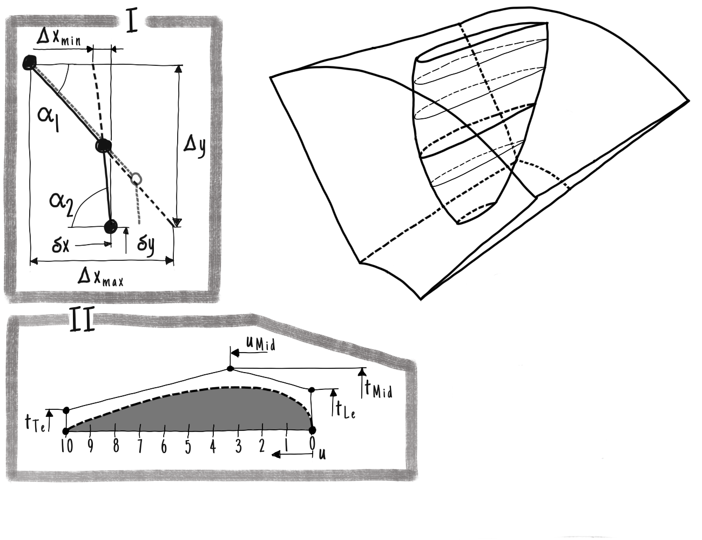
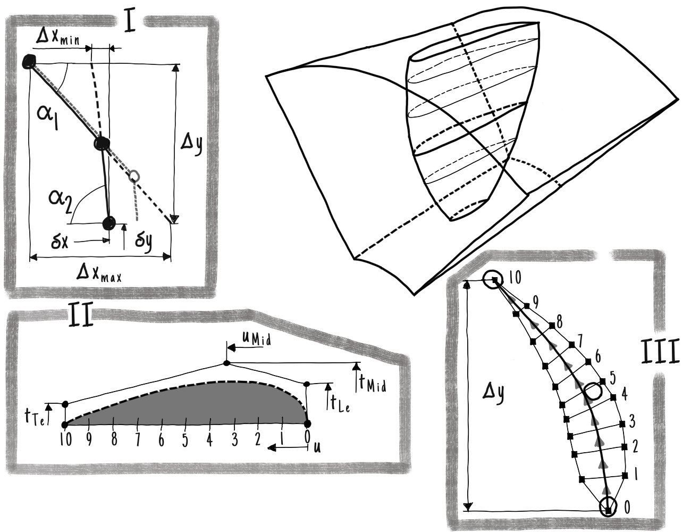
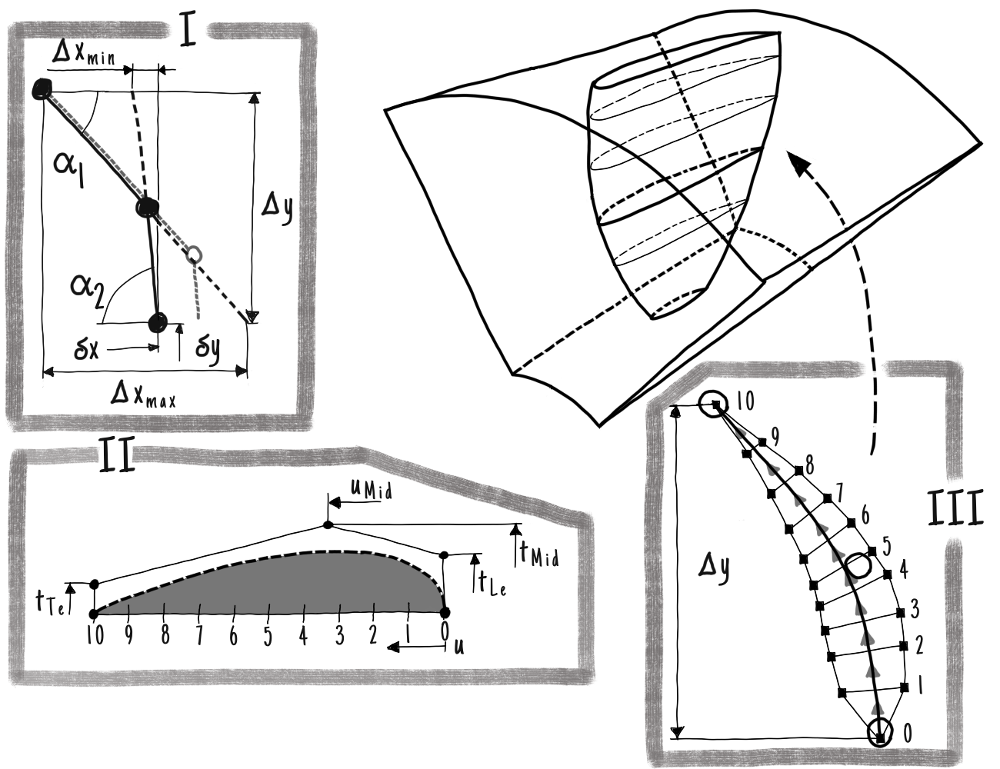
- Auslegung der Maschine auf Blattschnitten
- Definition von Freiheitsgraden zur Veränderung der Geometrie
- Erzeugung der dreidimensionalen Geometrie durch Verbinden von Kurven
- Verwendung von nicht-uniformen, rationalen B-Splines (NURBS)
Grundgleichungen
Beschreibung von Strömungen durch Navier-Stokes-Gleichungen:
\[ \begin{aligned} \frac{\partial{}}{\partial{t}} \underline{u} + \underline{u} \cdot \left( \nabla \cdot \underline{u} \right) & = \nu \nabla \cdot \left( \nabla \cdot \underline{u} \right) - \frac{1}{\rho} \nabla p \\ \nabla \cdot \underline{u} & = 0 \end{aligned} \]
\[ \begin{aligned} \color{blue}{\frac{\partial{}}{\partial{t}} \underline{u}} + \color{orange}{\underline{u} \cdot \left( \nabla \cdot \underline{u} \right)} & = \color{magenta}{\nu \nabla \cdot \left( \nabla \cdot \underline{u} \right)} - \color{green}{\frac{1}{\rho} \nabla p} \\ \nabla \cdot \underline{u} & = 0 \end{aligned} \]
- Unbekannte \(\phi\) bzw. \(\underline{u}\) und \(\underline{p}\) sind kontinuierliche Felder (Kontinuumsmechanik)
- Numerik löst partielle Differentialgleichungen an diskreten Stellen (Gitter)
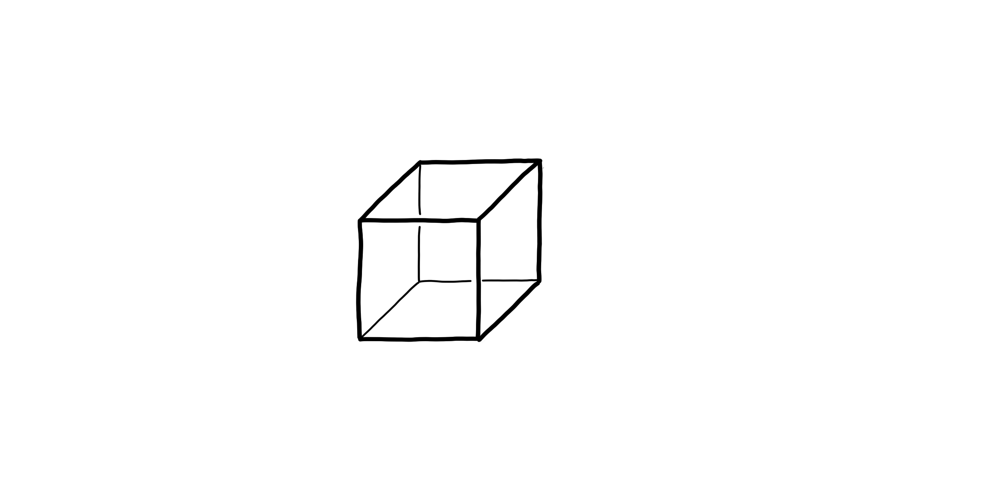
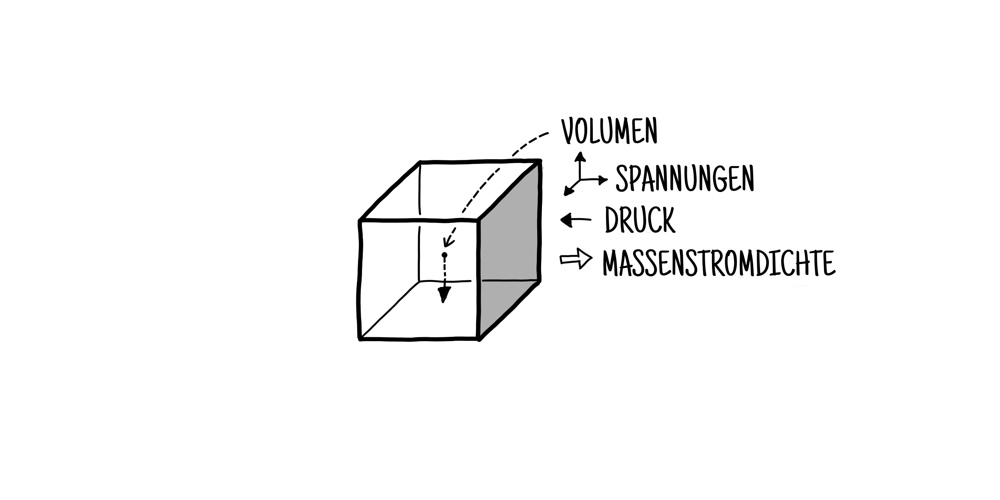
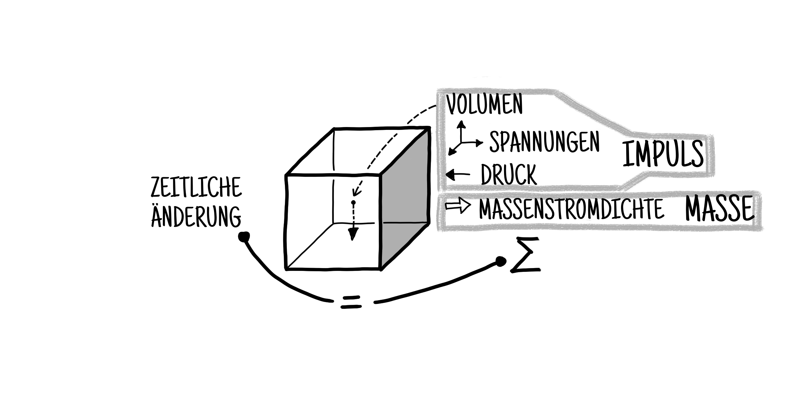
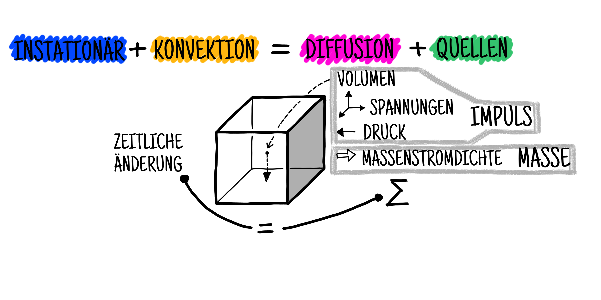

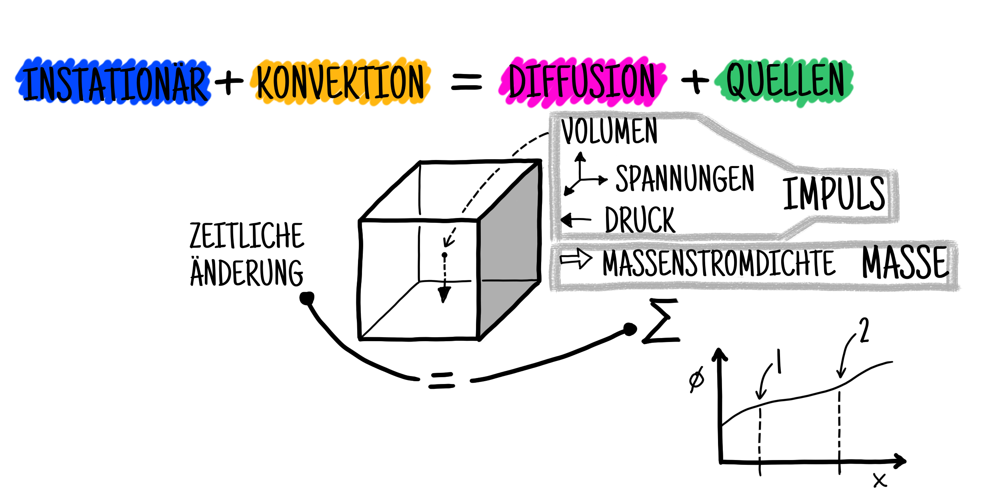
Finite-Volumen-Methode
Ortsdiskretisierung
Eindimensionales Konvektions-Diffusions-Problem \(u\pp{\phi}{x} = \Gamma \pp{}{x}\pp{\phi}{x}\) mit \(u,\Gamma=\mathrm{const}\)
\[ {\small\begin{aligned} u \pp{\phi}{x} & \hide{ \rightarrow \intV{u\pp{\phi}{x}} \rightarrow \intS{u \phi} \rightarrow - \at{u \phi}{k} + \at{u \phi}{k+1} } \\ & \hide{ \rightarrow - u \frac{\phi_{m-1} + \phi_{m}}{2} + u \frac{\phi_m + \phi_{m+1}}{2} \rightarrow u\fd{\phi}{m+1}{m-1}{2} } \\ \Gamma \pp{}{x} \pp{\phi}{x} & \hide{ \rightarrow \intV{\Gamma \pp{}{x}\pp{\phi}{x}} \rightarrow \intS{\Gamma \pp{\phi}{x}} \rightarrow - \at{\Gamma\pp{ \phi}{x}}{k} + \at{\Gamma \pp{\phi}{x}}{k+1} } \\ & \hide{ \rightarrow - \Gamma \fd{\phi}{m}{m-1}{\delta x} + \Gamma \fd{\phi}{m+1}{m}{\delta x} \rightarrow \Gamma \ffd{\phi}{m+1}{m}{m-1}{\delta x} } \end{aligned}} \]
\[ {\small\begin{aligned} u \pp{\phi}{x} & \rightarrow \intV{u\pp{\phi}{x}} \rightarrow \intS{u \phi} \hide{ \rightarrow - \at{u \phi}{k} + \at{u \phi}{k+1} } \\ & \hide{ \rightarrow - u \frac{\phi_{m-1} + \phi_{m}}{2} + u \frac{\phi_m + \phi_{m+1}}{2} \rightarrow u\fd{\phi}{m+1}{m-1}{2} } \\ \Gamma \pp{}{x} \pp{\phi}{x} & \rightarrow \intV{\Gamma \pp{}{x}\pp{\phi}{x}} \rightarrow \intS{\Gamma \pp{\phi}{x}} \hide{ \rightarrow - \at{\Gamma\pp{ \phi}{x}}{k} + \at{\Gamma \pp{\phi}{x}}{k+1} } \\ & \hide{ \rightarrow - \Gamma \fd{\phi}{m}{m-1}{\delta x} + \Gamma \fd{\phi}{m+1}{m}{\delta x} \rightarrow \Gamma \ffd{\phi}{m+1}{m}{m-1}{\delta x} } \end{aligned}} \]
\[ {\small\begin{aligned} u \pp{\phi}{x} & \rightarrow \intV{u\pp{\phi}{x}} \rightarrow \intS{u \phi} \rightarrow - \at{u \phi}{k} + \at{u \phi}{k+1} \\ & \hide{ \rightarrow - u \frac{\phi_{m-1} + \phi_{m}}{2} + u \frac{\phi_m + \phi_{m+1}}{2} \rightarrow u\fd{\phi}{m+1}{m-1}{2} } \\ \Gamma \pp{}{x} \pp{\phi}{x} & \rightarrow \intV{\Gamma \pp{}{x}\pp{\phi}{x}} \rightarrow \intS{\Gamma \pp{\phi}{x}} \rightarrow - \at{\Gamma\pp{ \phi}{x}}{k} + \at{\Gamma \pp{\phi}{x}}{k+1} \\ & \hide{ \rightarrow - \Gamma \fd{\phi}{m}{m-1}{\delta x} + \Gamma \fd{\phi}{m+1}{m}{\delta x} \rightarrow \Gamma \ffd{\phi}{m+1}{m}{m-1}{\delta x} } \end{aligned}} \]
\[ {\small\begin{aligned} u \pp{\phi}{x} & \rightarrow \intV{u\pp{\phi}{x}} \rightarrow \intS{u \phi} \rightarrow - \at{u \phi}{k} + \at{u \phi}{k+1} \\ & \rightarrow - u \frac{\phi_{m-1} + \phi_{m}}{2} + u \frac{\phi_m + \phi_{m+1}}{2} \rightarrow u\fd{\phi}{m+1}{m-1}{2} \\ \Gamma \pp{}{x} \pp{\phi}{x} & \rightarrow \intV{\Gamma \pp{}{x}\pp{\phi}{x}} \rightarrow \intS{\Gamma \pp{\phi}{x}} \rightarrow - \at{\Gamma\pp{ \phi}{x}}{k} + \at{\Gamma \pp{\phi}{x}}{k+1} \\ & \rightarrow - \Gamma \fd{\phi}{m}{m-1}{\delta x} + \Gamma \fd{\phi}{m+1}{m}{\delta x} \rightarrow \Gamma \ffd{\phi}{m+1}{m}{m-1}{\delta x} \end{aligned}} \]
Differential
Differential \(\rightarrow\) Integral mit Divergenztheorem
Differential \(\rightarrow\) Integral mit Divergenztheorem
Differential \(\rightarrow\) Integral mit Divergenztheorem \(\rightarrow\) lineare Approximation
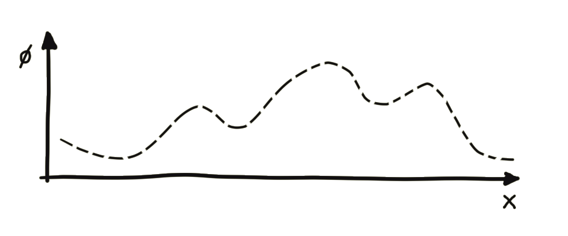
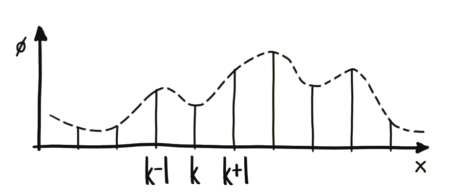
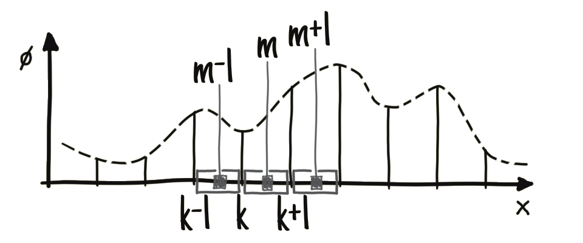
\[ {\small \left( -\frac{u}{2}-\frac{\Gamma}{\delta x} \right) \phi_{m-1} +\left( \frac{2\Gamma}{\delta x} \right) \phi_{m} +\left( \frac{u}{2}-\frac{\Gamma}{\delta x} \right) \phi_{m+1} = 0 } \]
Finite-Volumen-Methode
Lineares Gleichungssystem
FVM liefert \[{\small \left( -\frac{u}{2}-\frac{\Gamma}{\delta x} \right) \phi_{m-1} +\left( \frac{2\Gamma}{\delta x} \right) \phi_{m} +\left( \frac{u}{2}-\frac{\Gamma}{\delta x} \right) \phi_{m+1} = 0 }\]
- Koeffizienten für die \(m\)-te Zeile
- Analoges Aufstellen für alle anderen Auswertestellen liefern das lineare Gleichungssystem
\[ {\scriptsize \begin{bmatrix} \blacksquare & \blacksquare & 0 & \dots & \dots & \dots & 0\\ \blacksquare & \ddots & \ddots & 0 & & & \vdots\\ 0 & \ddots & \ddots & \ddots & 0 & & \vdots\\ \vdots & 0 & \blacksquare & \blacksquare & \blacksquare& 0 & \vdots\\ \vdots & & 0 & \ddots & \ddots& \ddots & 0\\ \vdots & & & 0 & \ddots& \ddots & \blacksquare\\ 0 & \dots & \dots & \dots & 0 & \blacksquare & \blacksquare\\ \end{bmatrix} \begin{bmatrix} \phi_1 \\ \vdots \\ \phi_m \\ \vdots \\ \phi_N \\ \end{bmatrix} = \begin{bmatrix} 0 \\ \vdots \\ 0 \\ \vdots \\ 0 \\ \end{bmatrix} \mathrm{mit} \; \blacksquare \; \mathrm{für\ Einträge} \neq 0 } \]
- Matrix hat für den gezeigten Fall eine Bandstruktur
- Matrix ist fast immer schwachbesetzt und die Besetzungsstruktur ist abhängig vom verwendeten Berechnungsgitter
Turbulenzmodellierung
@krappel_2020
- Lösung der Navier-Stokes-Gleichungen (DNS)
- Auflösung aller Wirbelskalen
- Rechenaufwand bei großer \(Re\)-Zahl mehr als 100 Jahre
- Komplette oder teilweise Modellierung der Wirbelskala
- RANS (zeitliche Mittelung) oder LES (räumliche Filterung)
Bei RANS entsteht der Reynoldsspannungstensor aus den nicht-linearen Konvektionstermen in
\[ {\scriptsize \pp{}{t} \uv + \underbrace{ \uv \cdot \left( \nabla \cdot \uv \right) }_{ \mathrm{nicht-linear} } = \nu \nabla \cdot \left( \nabla \cdot \underline{u} \right) - \frac{1}{\rho} \nabla p } \]
Dieser Tensor wird durch Turbulenzmodellierung approximiert.
Evolutionäre Optimierung
Teilturbine
@Tismer_2020
Anwendung
Wasserkraftwerk in Nepal @Hoffmann_2000
Leistungsschwankungen der Turbine verursacht durch die Trifurkation
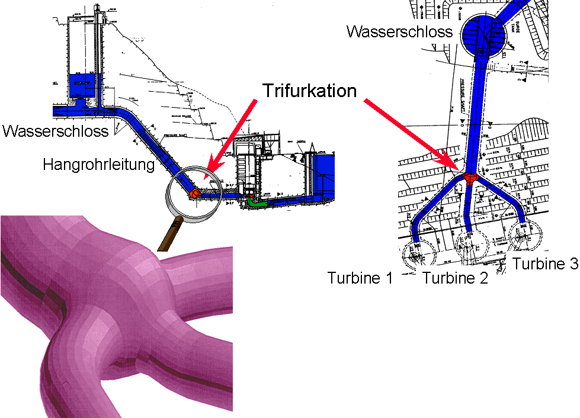
Anwendung
Wasserkraftwerk in Nepal @Hoffmann_2000
Instationärer Wirbel innerhalt der Trifurkation
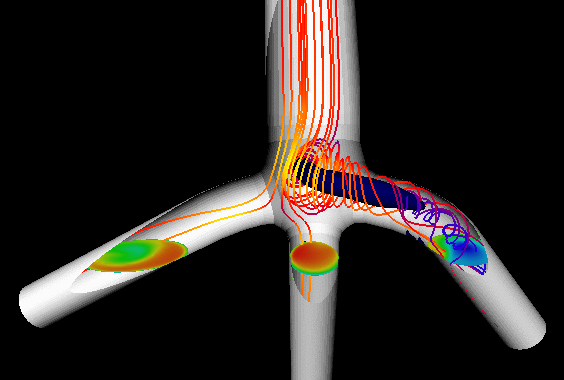
Anwendung
Wasserkraftwerk in Nepal @Hoffmann_2000
Lösung: Einbau von Blechen
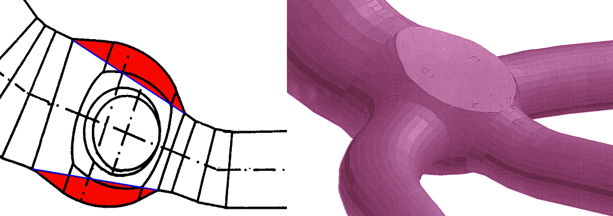
Anwendung
Wasserkraftwerk in Nepal @Kirschner_2019
Anderes Kraftwerk, aber gleiches Problem?
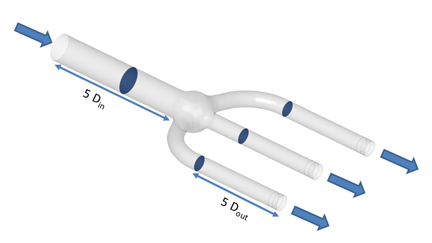
Anwendung
Wasserkraftwerk in Nepal @Kirschner_2019
Original
Modifikation
Der Einbau von Blechen in der Trifurkation reduziert das instationäre Verhalten des Wirbels @Kirschner_2019
Anwendung
Gezeitenströmung @Ruopp_2016
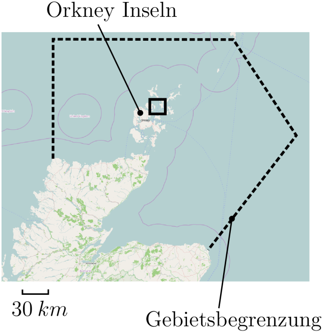
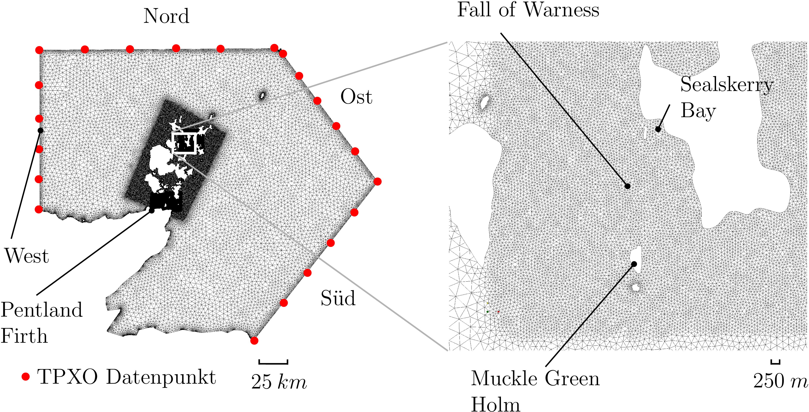
- Geometriedaten aus geometrischem Informationssystem (GIS)
- Kopplung von TPXO für Randbedingungen
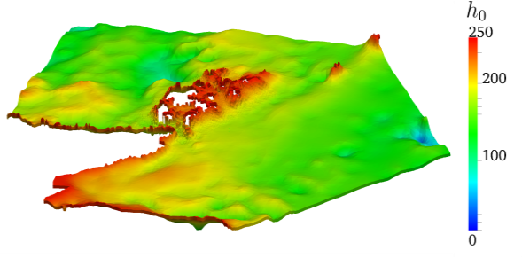
Anwendung
Gezeitenströmung @Ruopp_2016
Theoretisches Potential
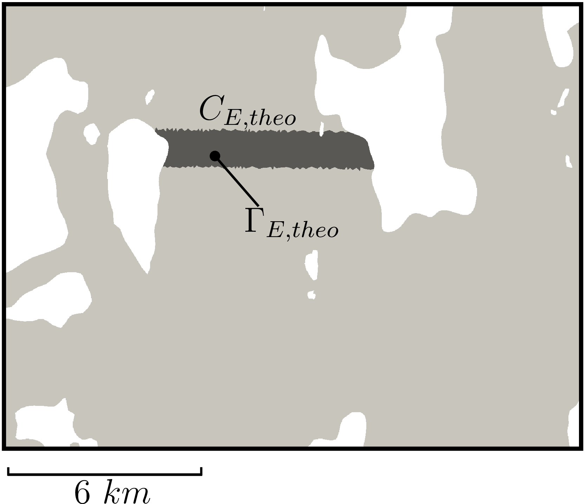
- Kanalverblockung
Technisches Potential
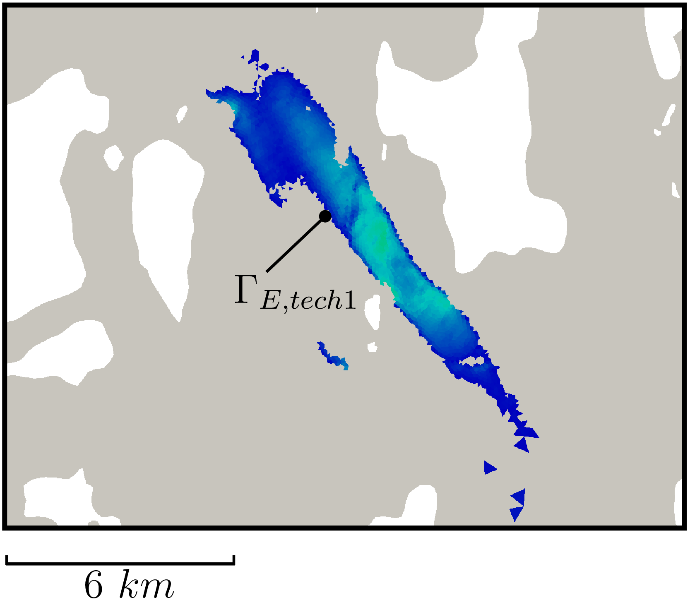
- Verblockung nutzbare Fläche
Realistisches Potential
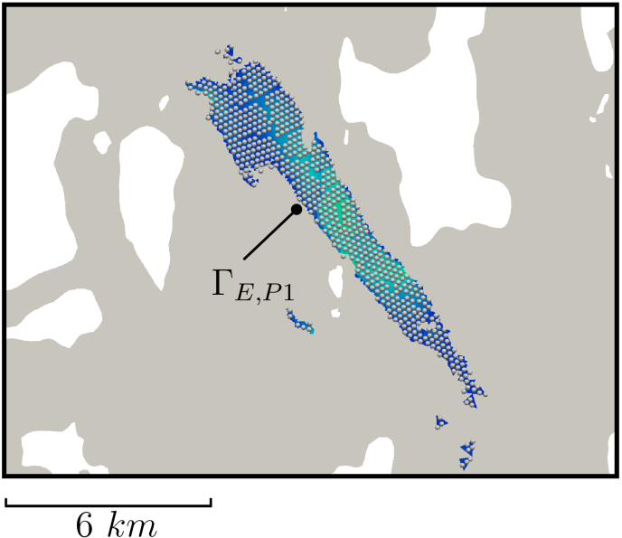
- Platzierung einzelner Turbinen
- Berücksichtigung der Hauptströmungsrichtungen
- Fernfeldeinfluss mit Nachlaufschatten
Anwendung
Gezeitenströmung @Ruopp_2016
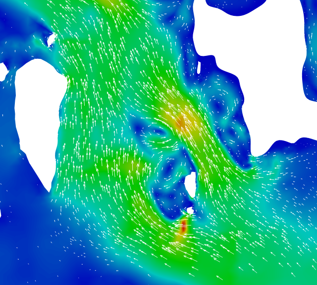
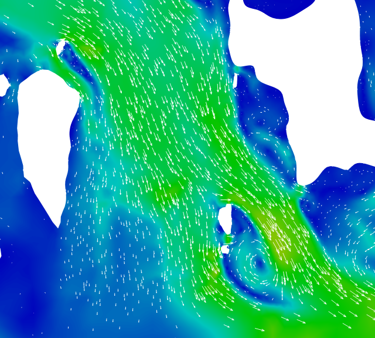
- Zeitlicher Verlauf der Strömungsrichtung und zwei Strömungsfelder in unterschiedlichen Zeitschritten
Anwendung
Gezeitenströmung @Ruopp_2016
Beispiel des Verlaufs der Anströmbedingungen
- Starke Variation der lokalen Anströmrichtungen
- Turbinenverbund verblockt maßgeblich Kernströmung im Kanal